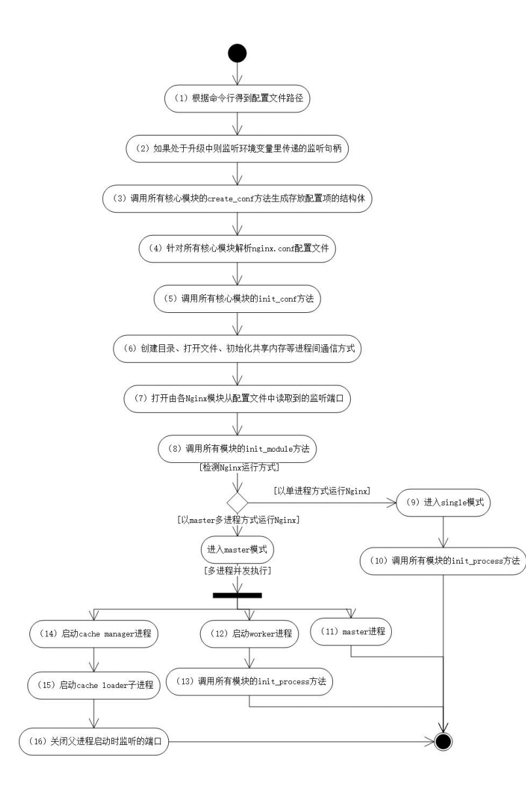
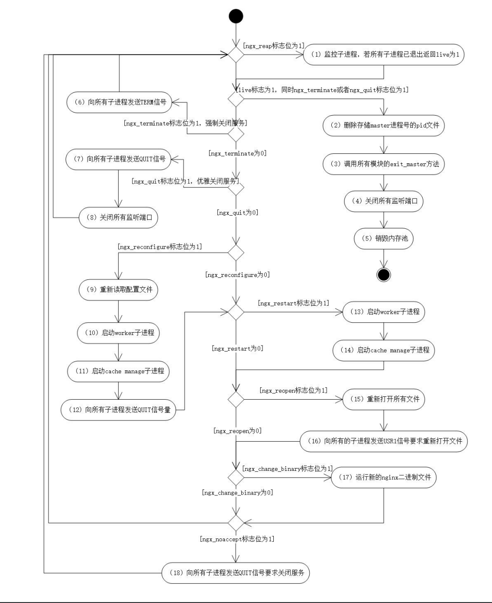
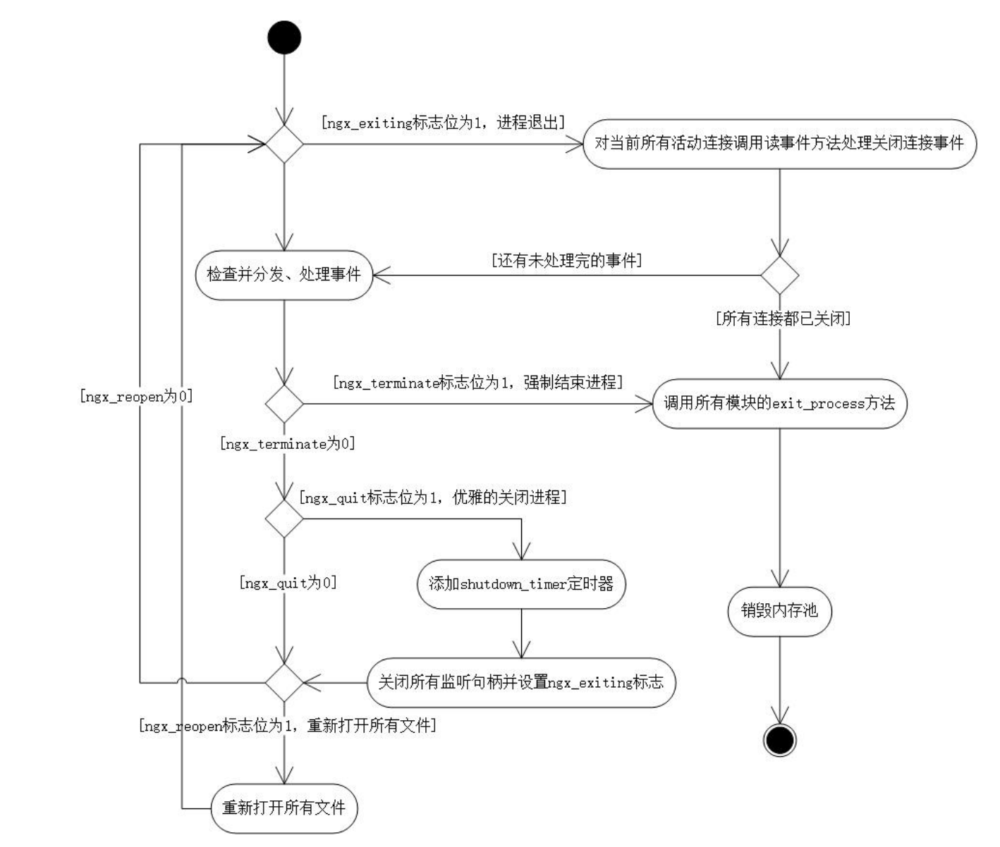
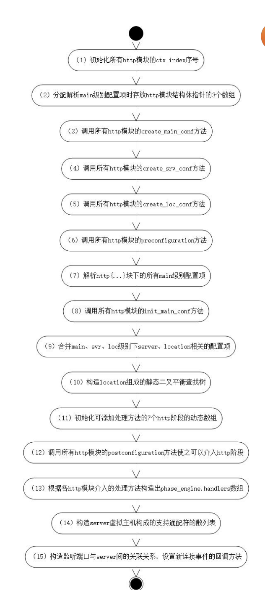
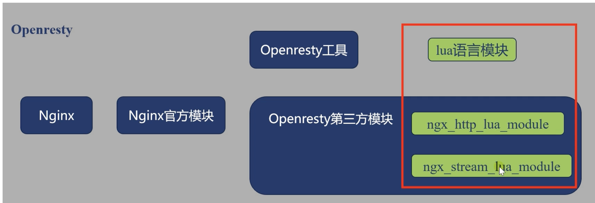
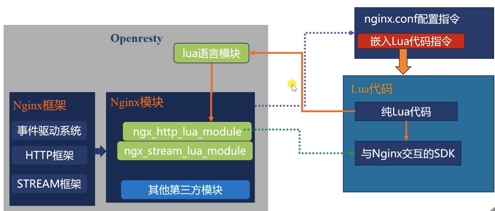
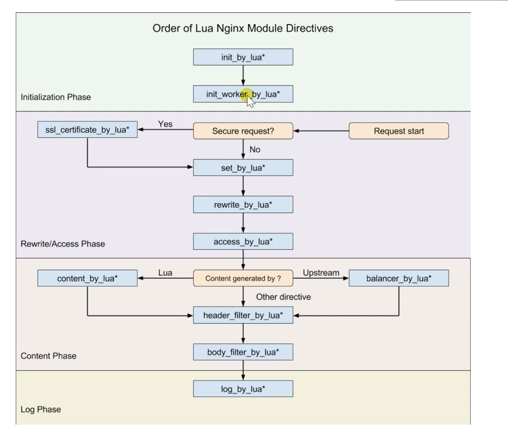

6. openresty及nginx源码
6.1. 第三方模块源码的快速阅读方法
分析模块提供的config文件
分析nginx_module_t 模块
分析nginx_commmand_t数组
对于http模块，分析ngx_http_module_t
分析模块生效方法。
6.2. config结构
ngx_addon_name: 定义模块名称
HTTP_MODULES: 定义模块
NGX_ADDON_SRCS: 哪些模块的源文件需要编译
ngx_addon_name=ngx_http_headers_more_filter_module
HEADERS_MORE_SRCS=" \
$ngx_addon_dir/src/ngx_http_headers_more_filter_module.c \
$ngx_addon_dir/src/ngx_http_headers_more_headers_out.c \
$ngx_addon_dir/src/ngx_http_headers_more_headers_in.c \
$ngx_addon_dir/src/ngx_http_headers_more_util.c \
"
HEADERS_MORE_DEPS=" \
$ngx_addon_dir/src/ddebug.h \
$ngx_addon_dir/src/ngx_http_headers_more_filter_module.h \
$ngx_addon_dir/src/ngx_http_headers_more_headers_in.h \
$ngx_addon_dir/src/ngx_http_headers_more_headers_out.h \
$ngx_addon_dir/src/ngx_http_headers_more_headers_in.h \
$ngx_addon_dir/src/ngx_http_headers_more_util.h \
"
if test -n "$ngx_module_link"; then
ngx_module_type=HTTP_AUX_FILTER
ngx_module_name=$ngx_addon_name
ngx_module_incs=
ngx_module_deps="$HEADERS_MORE_DEPS"
ngx_module_srcs="$HEADERS_MORE_SRCS"
ngx_module_libs=
. auto/module
else
HTTP_AUX_FILTER_MODULES="$HTTP_AUX_FILTER_MODULES $ngx_addon_name"
NGX_ADDON_SRCS="$NGX_ADDON_SRCS $HEADERS_MORE_SRCS"
NGX_ADDON_DEPS="$NGX_ADDON_DEPS $HEADERS_MORE_DEPS"
fi
6.3. nginx启动和退户回调方法
ngx_int_t (*init_master)(ngx_log_t *log);
ngx_int_t (*init_module)(ngx_cycle_t *cycle);
ngx_int_t (*init_process)(ngx_cycle_t *cycle);
ngx_int_t (*init_thread)(ngx_cycle_t *cycle);
void (*exit_thread)(ngx_cycle_t *cycle);
void (*exit_process)(ngx_cycle_t *cycle);
void (*exit_master)(ngx_cycle_t *cycle);
6.4. nginx启动过程
6.5. master进程循环
6.6. work进程循环
6.7. http模块初始化
6.8. http模块的11个阶段
typedef enum {
NGX_HTTP_POST_READ_PHASE = 0,
NGX_HTTP_SERVER_REWRITE_PHASE,
NGX_HTTP_FIND_CONFIG_PHASE,
NGX_HTTP_REWRITE_PHASE,
NGX_HTTP_POST_REWRITE_PHASE,
NGX_HTTP_PREACCESS_PHASE,
NGX_HTTP_ACCESS_PHASE,
NGX_HTTP_POST_ACCESS_PHASE,
NGX_HTTP_PRECONTENT_PHASE,
NGX_HTTP_CONTENT_PHASE,
NGX_HTTP_LOG_PHASE
} ngx_http_phases;
6.9. 添加模块到11个阶段的常用方法
直接覆盖式，通过 clcf->handler = nginx_http_proxy_handler;
通过链表。top->filter1(还有next指向后续filter2)
6.10. if指令连续出现
演示案例
具体原因分析
if指令是rewrite阶段的执行的，会在if条件为真的时候，替换掉当前请求的配置，if是向上继承的，在rewrite阶段顺序执行时， 每次if为真都会替换当前请求的配置。
正确姿势
熟练掌握rewrite的5个指令。
if是可以正确执行，不依赖外部的指令。
break会阻断后续rewrite的阶段指令的执行。
6.11. coredump 核心转储文件
worker_rlimit_core限制core文件大小，working_directory 控制coredump放置的目录。
官方参考： http://nginx.org/en/docs/ngx_core_module.html#worker_rlimit_core
如何生成coredump文件
配置nginx配置如下
worker_rlimit_core 100M;
working_directory /tmp/nginx;
发送信号
# 确认一个work进程id
[root@zhaojiedi-elk-2 nginx]# ps -ef |grep nginx
root 22358 1 0 20:35 ? 00:00:00 nginx: master process ./sbin/nginx
root 22622 22358 0 20:37 ? 00:00:00 nginx: worker process
root 22696 22358 0 20:37 ? 00:00:00 nginx: worker process
root 22894 20221 0 20:39 pts/0 00:00:00 grep --color=auto nginx
#确认下段异常错误为11
[root@zhaojiedi-elk-2 nginx]# kill -l
1) SIGHUP 2) SIGINT 3) SIGQUIT 4) SIGILL 5) SIGTRAP
6) SIGABRT 7) SIGBUS 8) SIGFPE 9) SIGKILL 10) SIGUSR1
11) SIGSEGV 12) SIGUSR2 13) SIGPIPE 14) SIGALRM 15) SIGTERM
16) SIGSTKFLT 17) SIGCHLD 18) SIGCONT 19) SIGSTOP 20) SIGTSTP
21) SIGTTIN 22) SIGTTOU 23) SIGURG 24) SIGXCPU 25) SIGXFSZ
26) SIGVTALRM 27) SIGPROF 28) SIGWINCH 29) SIGIO 30) SIGPWR
31) SIGSYS 34) SIGRTMIN 35) SIGRTMIN+1 36) SIGRTMIN+2 37) SIGRTMIN+3
38) SIGRTMIN+4 39) SIGRTMIN+5 40) SIGRTMIN+6 41) SIGRTMIN+7 42) SIGRTMIN+8
43) SIGRTMIN+9 44) SIGRTMIN+10 45) SIGRTMIN+11 46) SIGRTMIN+12 47) SIGRTMIN+13
48) SIGRTMIN+14 49) SIGRTMIN+15 50) SIGRTMAX-14 51) SIGRTMAX-13 52) SIGRTMAX-12
53) SIGRTMAX-11 54) SIGRTMAX-10 55) SIGRTMAX-9 56) SIGRTMAX-8 57) SIGRTMAX-7
58) SIGRTMAX-6 59) SIGRTMAX-5 60) SIGRTMAX-4 61) SIGRTMAX-3 62) SIGRTMAX-2
63) SIGRTMAX-1 64) SIGRTMAX
# send signal
[root@zhaojiedi-elk-2 nginx]# kill -11 22622 22696
[root@zhaojiedi-elk-2 nginx]# ll /tmp/nginx/
total 0
[root@zhaojiedi-elk-2 nginx]# ll /home/coresave/
total 9016
-rw------- 1 root root 5124096 Jan 17 20:39 core.nginx.22622.1642423167
-rw------- 1 root root 5124096 Jan 17 20:39 core.nginx.22696.1642423167
这里机器单独配置了core位置了，你是nginx配置的为啥不能覆盖系统的呢。
[root@zhaojiedi-elk-2 nginx]# sysctl -a |grep patt
kernel.core_pattern = /home/coresave/core.%e.%p.%t
6.12. gdb的基本使用
bt: 显示函数堆栈调用情况
f: 显示某1堆栈详细信息
p: 打印变量值
l: 显示附近代码
x: 显示具体内存值
i: 显示信息
gdb分析上面产生的core文件
# 开始gdb
[root@zhaojiedi-elk-2 nginx]# gdb /root/openresty/nginx/sbin/nginx /home/coresave/core.nginx.22622.1642423167
GNU gdb (GDB) Red Hat Enterprise Linux 7.6.1-120.el7
Copyright (C) 2013 Free Software Foundation, Inc.
License GPLv3+: GNU GPL version 3 or later <http://gnu.org/licenses/gpl.html>
This is free software: you are free to change and redistribute it.
There is NO WARRANTY, to the extent permitted by law. Type "show copying"
and "show warranty" for details.
This GDB was configured as "x86_64-redhat-linux-gnu".
For bug reporting instructions, please see:
<http://www.gnu.org/software/gdb/bugs/>...
Reading symbols from /root/openresty/nginx/sbin/nginx...done.
[New LWP 22622]
[Thread debugging using libthread_db enabled]
Using host libthread_db library "/lib64/libthread_db.so.1".
Core was generated by `nginx: worker'.
Program terminated with signal 11, Segmentation fault.
#0 0x00007efcbd29dfb3 in __epoll_wait_nocancel () from /lib64/libc.so.6
Missing separate debuginfos, use: debuginfo-install GeoIP-1.5.0-14.el7.x86_64 bzip2-libs-1.0.6-13.el7.x86_64 cyrus-sasl-lib-2.1.26-23.el7.x86_64 expat-2.1.0-12.el7.x86_64 fontconfig-2.13.0-4.3.el7.x86_64 freetype-2.8-14.el7_9.1.x86_64 gd-2.0.35-27.el7_9.x86_64 glibc-2.17-324.el7_9.x86_64 gperftools-libs-2.6.1-1.el7.x86_64 keyutils-libs-1.5.8-3.el7.x86_64 krb5-libs-1.15.1-50.el7.x86_64 libX11-1.6.7-4.el7_9.x86_64 libXau-1.0.8-2.1.el7.x86_64 libXpm-3.5.12-1.el7.x86_64 libcom_err-1.42.9-19.el7.x86_64 libgcc-4.8.5-44.el7.x86_64 libgcrypt-1.5.3-14.el7.x86_64 libgpg-error-1.12-3.el7.x86_64 libjpeg-turbo-1.2.90-8.el7.x86_64 libpng-1.5.13-8.el7.x86_64 libselinux-2.5-15.el7.x86_64 libstdc++-4.8.5-44.el7.x86_64 libuuid-2.23.2-65.el7_9.1.x86_64 libxcb-1.13-1.el7.x86_64 libxml2-2.9.1-6.el7.5.x86_64 libxslt-1.1.28-6.el7.x86_64 nspr-4.25.0-2.el7_9.x86_64 nss-3.53.1-7.el7_9.x86_64 nss-softokn-freebl-3.53.1-6.el7_9.x86_64 nss-util-3.53.1-1.el7_9.x86_64 openldap-2.4.44-24.el7_9.x86_64 openssl-libs-1.0.2k-21.el7_9.x86_64 pcre-8.32-17.el7.x86_64 perl-libs-5.16.3-299.el7_9.x86_64 postgresql-libs-9.2.24-7.el7_9.x86_64 xz-libs-5.2.2-1.el7.x86_64 zlib-1.2.7-19.el7_9.x86_64
# 看看函数堆栈
(gdb) bt
#0 0x00007efcbd29dfb3 in __epoll_wait_nocancel () from /lib64/libc.so.6
#1 0x0000000000455461 in ngx_epoll_process_events (cycle=0x1b5f060, timer=18446744073709551615, flags=1)
at src/event/modules/ngx_epoll_module.c:800
#2 0x000000000044a2e3 in ngx_process_events_and_timers (cycle=cycle@entry=0x1b5f060) at src/event/ngx_event.c:257
#3 0x00000000004530e5 in ngx_worker_process_cycle (cycle=cycle@entry=0x1b5f060, data=data@entry=0x1)
at src/os/unix/ngx_process_cycle.c:782
#4 0x0000000000451a6c in ngx_spawn_process (cycle=cycle@entry=0x1b5f060,
proc=proc@entry=0x4530a0 <ngx_worker_process_cycle>, data=data@entry=0x1,
name=name@entry=0x59d83f "worker process", respawn=respawn@entry=-4) at src/os/unix/ngx_process.c:199
#5 0x000000000045347c in ngx_start_worker_processes (cycle=cycle@entry=0x1b5f060, n=2, type=type@entry=-4)
at src/os/unix/ngx_process_cycle.c:382
#6 0x0000000000454354 in ngx_master_process_cycle (cycle=0x1b5f060, cycle@entry=0x1b28c40)
at src/os/unix/ngx_process_cycle.c:241
#7 0x00000000004281d2 in main (argc=<optimized out>, argv=<optimized out>) at src/core/nginx.c:386
# 查看各个线程的函数堆栈，这里只有1个线程的。
(gdb) thread apply all bt
Thread 1 (Thread 0x7efcc0bf28c0 (LWP 22622)):
#0 0x00007efcbd29dfb3 in __epoll_wait_nocancel () from /lib64/libc.so.6
#1 0x0000000000455461 in ngx_epoll_process_events (cycle=0x1b5f060, timer=18446744073709551615, flags=1)
at src/event/modules/ngx_epoll_module.c:800
#2 0x000000000044a2e3 in ngx_process_events_and_timers (cycle=cycle@entry=0x1b5f060) at src/event/ngx_event.c:257
#3 0x00000000004530e5 in ngx_worker_process_cycle (cycle=cycle@entry=0x1b5f060, data=data@entry=0x1)
at src/os/unix/ngx_process_cycle.c:782
#4 0x0000000000451a6c in ngx_spawn_process (cycle=cycle@entry=0x1b5f060,
proc=proc@entry=0x4530a0 <ngx_worker_process_cycle>, data=data@entry=0x1,
name=name@entry=0x59d83f "worker process", respawn=respawn@entry=-4) at src/os/unix/ngx_process.c:199
#5 0x000000000045347c in ngx_start_worker_processes (cycle=cycle@entry=0x1b5f060, n=2, type=type@entry=-4)
at src/os/unix/ngx_process_cycle.c:382
#6 0x0000000000454354 in ngx_master_process_cycle (cycle=0x1b5f060, cycle@entry=0x1b28c40)
at src/os/unix/ngx_process_cycle.c:241
#7 0x00000000004281d2 in main (argc=<optimized out>, argv=<optimized out>) at src/core/nginx.c:386
# 进入线程1
(gdb) t 1
[Switching to thread 1 (Thread 0x7efcc0bf28c0 (LWP 22622))]
#0 0x00007efcbd29dfb3 in __epoll_wait_nocancel () from /lib64/libc.so.6
# 进入堆栈1
(gdb) f 1
#1 0x0000000000455461 in ngx_epoll_process_events (cycle=0x1b5f060, timer=18446744073709551615, flags=1)
at src/event/modules/ngx_epoll_module.c:800
800 events = epoll_wait(ep, event_list, (int) nevents, timer);
# 打印这个变量的值看看
(gdb) p *cycle
$1 = {conf_ctx = 0x1b2a0d0, pool = 0x1b28c00, log = 0x1b5f078, new_log = {log_level = 4, file = 0x1b290a8,
connection = 0, disk_full_time = 0, handler = 0x0, data = 0x0, writer = 0x0, wdata = 0x0, action = 0x0,
next = 0x0}, log_use_stderr = 0, files = 0x0, free_connections = 0x7efcc0b562c8, free_connection_n = 1021,
modules = 0x1c21060, modules_n = 129, modules_used = 1, reusable_connections_queue = {prev = 0x1b5f100,
next = 0x1b5f100}, reusable_connections_n = 0, connections_reuse_time = 0, listening = {elts = 0x1b86440,
nelts = 1, size = 296, nalloc = 1, pool = 0x1b28c00, old_elts = 0x0}, paths = {elts = 0x1b2a900, nelts = 5,
size = 8, nalloc = 5, pool = 0x1b28c00, old_elts = 0x0}, config_dump = {elts = 0x1ba2840, nelts = 3, size = 24,
nalloc = 4, pool = 0x1b28c00, old_elts = 0x1ba28d0}, config_dump_rbtree = {root = 0x1baf200,
sentinel = 0x1b5f1c8, insert = 0x42fb80 <ngx_str_rbtree_insert_value>}, config_dump_sentinel = {key = 0,
left = 0x0, right = 0x0, parent = 0x0, color = 0 '\000', data = 0 '\000'}, open_files = {last = 0x1b5f1f8,
part = {elts = 0x1b29080, nelts = 2, next = 0x0}, size = 40, nalloc = 2, pool = 0x1b28c00}, shared_memory = {
last = 0x1b5f230, part = {elts = 0x1b29490, nelts = 0, next = 0x0}, size = 88, nalloc = 1, pool = 0x1b28c00},
connection_n = 1024, files_n = 0, connections = 0x7efcc0b56010, read_events = 0x1cddcf0, write_events = 0x1cf5d00,
old_cycle = 0x0, conf_file = {len = 37, data = 0x1b28ff0 "/root/openresty/nginx/conf/nginx.conf"}, conf_param = {
len = 0, data = 0x1b29060 "0\220\262\001"}, conf_prefix = {len = 27,
data = 0x1b28f20 "/root/openresty/nginx/conf/"}, prefix = {len = 22, data = 0x1b28f90 "/root/openresty/nginx/"},
error_log = {len = 14, data = 0x1b28fd0 "logs/error.log"}, lock_file = {len = 38,
data = 0x1bf8e60 "/root/openresty/nginx/logs/nginx.lock.accept"}, hostname = {len = 33,
data = 0x1b64620 "zhaojiedi-elk-2.epc.duxiaoman.com"}, intercept_error_log_handler = 0x0,
intercept_error_log_data = 0x0, entered_logger = 0}
(gdb) p *cycle->modules
$2 = (ngx_module_t *) 0x807360 <ngx_core_module>
# 查看具体命令
(gdb) p cycle->modules[10]->commands[15]
$19 = {name = {len = 3, data = 0x5c903e "ngx_openssl_module"}, type = 0, set = 0x0, conf = 1019009, offset = 5868632,
post = 0x8092c0 <ngx_openssl_module_ctx>}
(gdb) p ((ngx_listening_t*)(cycle->listening->elts))[1]
$24 = {fd = 4097, sockaddr = 0x0, socklen = 0, addr_text_max_len = 2, addr_text = {len = 0,
data = 0x1b9dd78 "\"h\233\321\a"}, type = 28981264, backlog = 0, rcvbuf = 0, sndbuf = 0, keepidle = 0,
keepintvl = 0, keepcnt = 10, handler = 0x0, servers = 0x1b9deb8, log = {log_level = 28981264, file = 0x0,
connection = 0, disk_full_time = 0, handler = 0x0, data = 0x1b9df68, writer = 0x1ba3810, wdata = 0x0,
action = 0x0, next = 0x2}, logp = 0x0, pool_size = 28958712, post_accept_buffer_size = 28981264, previous = 0x0,
connection = 0x0, rbtree = {root = 0x2, sentinel = 0x0, insert = 0x1b9e128}, sentinel = {key = 28949512,
left = 0x0, right = 0x0, parent = 0x2, color = 0 '\000', data = 0 '\000'}, worker = 28959336, open = 0,
remain = 0, ignore = 0, bound = 1, inherited = 1, nonblocking_accept = 1, listen = 0, nonblocking = 0, shared = 0,
addr_ntop = 0, wildcard = 1, ipv6only = 1, reuseport = 1, add_reuseport = 1, keepalive = 2, deferred_accept = 1,
delete_deferred = 0, add_deferred = 0, fastopen = 0}
6.13. debug定位问题
我们引入了第三方模块可能存在bug的，打开debug_points后则遇到问题后停止服务，方便定位问题。
abort: 生成coredump后结束进程
stop: 结束进程
6.14. 控制debug级别的error.log日志输出
debug_connection针对特定客户端打印debug级别的日志，其他的日志正常打印。
Note
需要nginx编译的时候–with-debug编译选项。
6.15. debug日志分析
建立连接
ssl握手
接受请求的头部
解析行
解析头部
11阶段处理
查找location
反向代理构造上游的请求
接收客户端请求包体
构造响应头
发送响应
过滤模块
# 可以看到请求过来了。
2022/01/19 15:03:55 [debug] 46632#46632: *20 accept: 10.157.89.215:40240 fd:3
2022/01/19 15:03:55 [debug] 46632#46632: malloc: 0000000001BD4F20:64
2022/01/19 15:03:55 [debug] 46632#46632: malloc: 0000000001BFBC10:16
2022/01/19 15:03:55 [debug] 46632#46632: malloc: 0000000001C0AE30:24
2022/01/19 15:03:55 [debug] 46632#46632: malloc: 0000000001BFA720:16
2022/01/19 15:03:55 [debug] 46632#46632: *20 event timer add: 3: 60000:10094575278
2022/01/19 15:03:55 [debug] 46632#46632: *20 reusable connection: 1
2022/01/19 15:03:55 [debug] 46632#46632: *20 epoll add event: fd:3 op:1 ev:80002001
2022/01/19 15:03:55 [debug] 46632#46632: *20 http wait request handler
2022/01/19 15:03:55 [debug] 46632#46632: *20 malloc: 0000000001BAF200:80
2022/01/19 15:03:55 [debug] 46632#46632: *20 malloc: 0000000001BFA580:16
2022/01/19 15:03:55 [debug] 46632#46632: *20 malloc: 0000000001C86610:1024
2022/01/19 15:03:55 [debug] 46632#46632: *20 malloc: 0000000001BAE800:16
2022/01/19 15:03:55 [debug] 46632#46632: *20 recv: eof:0, avail:-1
2022/01/19 15:03:55 [debug] 46632#46632: *20 recv: fd:3 91 of 1024
2022/01/19 15:03:55 [debug] 46632#46632: *20 reusable connection: 0
2022/01/19 15:03:55 [debug] 46632#46632: *20 malloc: 0000000001B39230:48
2022/01/19 15:03:55 [debug] 46632#46632: *20 malloc: 0000000001C26990:1544
2022/01/19 15:03:55 [debug] 46632#46632: *20 malloc: 0000000001B9F340:16
2022/01/19 15:03:55 [debug] 46632#46632: *20 malloc: 0000000001C84C10:960
2022/01/19 15:03:55 [debug] 46632#46632: *20 malloc: 0000000001BB0FA0:16
2022/01/19 15:03:55 [debug] 46632#46632: *20 malloc: 0000000001CD9AD0:192
2022/01/19 15:03:55 [debug] 46632#46632: *20 malloc: 0000000001BAFC20:16
2022/01/19 15:03:55 [debug] 46632#46632: *20 malloc: 0000000001C61CB0:680
2022/01/19 15:03:55 [debug] 46632#46632: *20 malloc: 0000000001BAF720:16
2022/01/19 15:03:55 [debug] 46632#46632: *20 malloc: 0000000001B390E0:272
2022/01/19 15:03:55 [debug] 46632#46632: *20 malloc: 0000000001B9A380:16
# 开始处理请求行
2022/01/19 15:03:55 [debug] 46632#46632: *20 http process request line
2022/01/19 15:03:55 [debug] 46632#46632: *20 http request line: "GET / HTTP/1.1"
2022/01/19 15:03:55 [debug] 46632#46632: *20 http uri: "/"
2022/01/19 15:03:55 [debug] 46632#46632: *20 http args: ""
2022/01/19 15:03:55 [debug] 46632#46632: *20 http exten: ""
2022/01/19 15:03:55 [debug] 46632#46632: *20 malloc: 0000000001B5AB30:960
2022/01/19 15:03:55 [debug] 46632#46632: *20 malloc: 0000000001B4AAF0:16
2022/01/19 15:03:55 [debug] 46632#46632: *20 http process request header line
2022/01/19 15:03:55 [debug] 46632#46632: *20 malloc: 0000000001BCE0E0:10
2022/01/19 15:03:55 [debug] 46632#46632: *20 malloc: 0000000001B91880:16
2022/01/19 15:03:55 [debug] 46632#46632: *20 http header: "User-Agent: curl/7.29.0"
2022/01/19 15:03:55 [debug] 46632#46632: *20 malloc: 0000000001B56AC0:4
2022/01/19 15:03:55 [debug] 46632#46632: *20 malloc: 0000000001B2F3F0:16
2022/01/19 15:03:55 [debug] 46632#46632: *20 http header: "Host: n-ssl2.linuxpanda.tech:8012"
2022/01/19 15:03:55 [debug] 46632#46632: *20 malloc: 0000000001B5E6D0:6
2022/01/19 15:03:55 [debug] 46632#46632: *20 malloc: 0000000001BB3620:16
2022/01/19 15:03:55 [debug] 46632#46632: *20 http header: "Accept: */*"
2022/01/19 15:03:55 [debug] 46632#46632: *20 http header done
2022/01/19 15:03:55 [debug] 46632#46632: *20 event timer del: 3: 10094575278
# http的阶段开始
2022/01/19 15:03:55 [debug] 46632#46632: *20 generic phase: 0
2022/01/19 15:03:55 [debug] 46632#46632: *20 rewrite phase: 1
2022/01/19 15:03:55 [debug] 46632#46632: *20 rewrite phase: 2
# 选择location 看到使用了/
2022/01/19 15:03:55 [debug] 46632#46632: *20 test location: "/"
2022/01/19 15:03:55 [debug] 46632#46632: *20 using configuration "/"
2022/01/19 15:03:55 [debug] 46632#46632: *20 http cl:-1 max:1048576
2022/01/19 15:03:55 [debug] 46632#46632: *20 rewrite phase: 4
2022/01/19 15:03:55 [debug] 46632#46632: *20 rewrite phase: 5
2022/01/19 15:03:55 [debug] 46632#46632: *20 post rewrite phase: 6
2022/01/19 15:03:55 [debug] 46632#46632: *20 generic phase: 7
2022/01/19 15:03:55 [debug] 46632#46632: *20 generic phase: 8
2022/01/19 15:03:55 [debug] 46632#46632: *20 generic phase: 9
2022/01/19 15:03:55 [debug] 46632#46632: *20 generic phase: 10
2022/01/19 15:03:55 [debug] 46632#46632: *20 access phase: 11
2022/01/19 15:03:55 [debug] 46632#46632: *20 access phase: 12
2022/01/19 15:03:55 [debug] 46632#46632: *20 access phase: 13
2022/01/19 15:03:55 [debug] 46632#46632: *20 post access phase: 14
2022/01/19 15:03:55 [debug] 46632#46632: *20 generic phase: 15
2022/01/19 15:03:55 [debug] 46632#46632: *20 generic phase: 16
2022/01/19 15:03:55 [debug] 46632#46632: *20 malloc: 0000000001C82730:1184
2022/01/19 15:03:55 [debug] 46632#46632: *20 malloc: 0000000001BB4070:16
2022/01/19 15:03:55 [debug] 46632#46632: *20 malloc: 0000000001C7F370:176
2022/01/19 15:03:55 [debug] 46632#46632: *20 malloc: 0000000001C04B80:16
2022/01/19 15:03:55 [debug] 46632#46632: *20 malloc: 0000000001B950C0:304
2022/01/19 15:03:55 [debug] 46632#46632: *20 malloc: 0000000001BEE440:16
2022/01/19 15:03:55 [debug] 46632#46632: *20 malloc: 0000000001B29140:72
2022/01/19 15:03:55 [debug] 46632#46632: *20 malloc: 0000000001C04A80:16
2022/01/19 15:03:55 [debug] 46632#46632: *20 http init upstream, client timer: 0
2022/01/19 15:03:55 [debug] 46632#46632: *20 epoll add event: fd:3 op:3 ev:80002005
2022/01/19 15:03:55 [debug] 46632#46632: *20 malloc: 0000000001B72E80:80
2022/01/19 15:03:55 [debug] 46632#46632: *20 malloc: 0000000001B8C0D0:16
2022/01/19 15:03:55 [debug] 46632#46632: *20 malloc: 0000000001BFA660:105
2022/01/19 15:03:55 [debug] 46632#46632: *20 malloc: 0000000001C05F60:16
2022/01/19 15:03:55 [debug] 46632#46632: *20 malloc: 0000000001C04880:16
2022/01/19 15:03:55 [debug] 46632#46632: *20 malloc: 0000000001C04980:16
2022/01/19 15:03:55 [debug] 46632#46632: *20 http script copy: "Host"
2022/01/19 15:03:55 [debug] 46632#46632: *20 http script var: "n-ssl2.linuxpanda.tech"
2022/01/19 15:03:55 [debug] 46632#46632: *20 http script copy: "Connection"
2022/01/19 15:03:55 [debug] 46632#46632: *20 http script copy: "close"
2022/01/19 15:03:55 [debug] 46632#46632: *20 http script copy: ""
2022/01/19 15:03:55 [debug] 46632#46632: *20 http script copy: ""
2022/01/19 15:03:55 [debug] 46632#46632: *20 http proxy header: "User-Agent: curl/7.29.0"
2022/01/19 15:03:55 [debug] 46632#46632: *20 http proxy header: "Accept: */*"
2022/01/19 15:03:55 [debug] 46632#46632: *20 http proxy header:
# 可以看到发送给上游的请求详细信息。
"GET / HTTP/1.0
Host: n-ssl2.linuxpanda.tech
Connection: close
User-Agent: curl/7.29.0
Accept: */*
"
2022/01/19 15:03:55 [debug] 46632#46632: *20 malloc: 0000000001C02E10:48
2022/01/19 15:03:55 [debug] 46632#46632: *20 malloc: 0000000001C047A0:16
2022/01/19 15:03:55 [debug] 46632#46632: *20 malloc: 0000000001C7AB30:72
2022/01/19 15:03:55 [debug] 46632#46632: *20 malloc: 0000000001C07050:16
2022/01/19 15:03:55 [debug] 46632#46632: *20 malloc: 0000000001BB9E40:24
2022/01/19 15:03:55 [debug] 46632#46632: *20 malloc: 0000000001B8BE70:16
2022/01/19 15:03:55 [debug] 46632#46632: *20 http cleanup add: 0000000001BB9E40
2022/01/19 15:03:55 [debug] 46632#46632: *20 malloc: 0000000001BE9BA0:40
2022/01/19 15:03:55 [debug] 46632#46632: *20 malloc: 0000000001B620F0:16
2022/01/19 15:03:55 [debug] 46632#46632: *20 get rr peer, try: 1
2022/01/19 15:03:55 [debug] 46632#46632: *20 stream socket 5
2022/01/19 15:03:55 [debug] 46632#46632: *20 epoll add connection: fd:5 ev:80002005
2022/01/19 15:03:55 [debug] 46632#46632: *20 connect to 127.0.0.1:8011, fd:5 #21
2022/01/19 15:03:55 [debug] 46632#46632: *20 http upstream connect: -2
2022/01/19 15:03:55 [debug] 46632#46632: *20 malloc: 0000000001C03270:48
2022/01/19 15:03:55 [debug] 46632#46632: *20 event timer add: 5: 60000:10094575278
2022/01/19 15:03:55 [debug] 46632#46632: *20 http finalize request: -4, "/?" a:1, c:2
2022/01/19 15:03:55 [debug] 46632#46632: *20 http request count:2 blk:0
2022/01/19 15:03:55 [debug] 46632#46632: *20 http run request: "/?"
2022/01/19 15:03:55 [debug] 46632#46632: *20 http upstream check client, write event:1, "/"
2022/01/19 15:03:55 [debug] 46632#46632: *20 http upstream request: "/?"
2022/01/19 15:03:55 [debug] 46632#46632: *20 http upstream send request handler
2022/01/19 15:03:55 [debug] 46632#46632: *20 malloc: 0000000001BFEA40:96
2022/01/19 15:03:55 [debug] 46632#46632: *20 malloc: 0000000001BB0EF0:16
2022/01/19 15:03:55 [debug] 46632#46632: *20 set session: 0000000000000000
2022/01/19 15:03:55 [debug] 46632#46632: *20 tcp_nodelay
# ssl
2022/01/19 15:03:55 [debug] 46632#46632: *20 SSL_do_handshake: -1
2022/01/19 15:03:55 [debug] 46632#46632: *20 SSL_get_error: 2
2022/01/19 15:03:55 [debug] 46632#46632: *20 SSL handshake handler: 0
2022/01/19 15:03:55 [debug] 46632#46632: *20 verify:1, error:0, depth:1, subject:"/C=cn/ST=henan/L=zhengzhou/O=linuxpanda/OU=opt/CN=n-ca.linuxpanda.tech", issuer:"/C=cn/ST=henan/L=zhengzhou/O=linuxpanda/OU=opt/CN=n-ca.linuxpanda.tech"
2022/01/19 15:03:55 [debug] 46632#46632: *20 verify:1, error:0, depth:0, subject:"/C=cn/ST=henan/O=linuxpanda/OU=opt/CN=n-ssl1.linuxpanda.tech", issuer:"/C=cn/ST=henan/L=zhengzhou/O=linuxpanda/OU=opt/CN=n-ca.linuxpanda.tech"
2022/01/19 15:03:55 [debug] 46632#46632: *20 SSL_do_handshake: -1
2022/01/19 15:03:55 [debug] 46632#46632: *20 SSL_get_error: 2
2022/01/19 15:03:55 [debug] 46632#46632: *20 SSL handshake handler: 1
2022/01/19 15:03:55 [debug] 46632#46632: *20 SSL_do_handshake: -1
2022/01/19 15:03:55 [debug] 46632#46632: *20 SSL_get_error: 2
2022/01/19 15:03:55 [debug] 46632#46632: *20 SSL handshake handler: 0
2022/01/19 15:03:55 [debug] 46632#46632: *20 save session: 0000000001C36CF0
2022/01/19 15:03:55 [debug] 46632#46632: *20 SSL_do_handshake: 1
2022/01/19 15:03:55 [debug] 46632#46632: *20 SSL: TLSv1.2, cipher: "ECDHE-RSA-AES256-GCM-SHA384 TLSv1.2 Kx=ECDH Au=RSA Enc=AESGCM(256) Mac=AEAD"
2022/01/19 15:03:55 [debug] 46632#46632: *20 http upstream ssl handshake: "/?"
2022/01/19 15:03:55 [debug] 46632#46632: *20 X509_check_host(): match
2022/01/19 15:03:55 [debug] 46632#46632: *20 http upstream send request
2022/01/19 15:03:55 [debug] 46632#46632: *20 http upstream send request body
2022/01/19 15:03:55 [debug] 46632#46632: *20 chain writer buf fl:1 s:105
2022/01/19 15:03:55 [debug] 46632#46632: *20 malloc: 0000000001B35710:16
2022/01/19 15:03:55 [debug] 46632#46632: *20 malloc: 0000000001CDD230:16
2022/01/19 15:03:55 [debug] 46632#46632: *20 chain writer in: 0000000001B35710
2022/01/19 15:03:55 [debug] 46632#46632: *20 malloc: 0000000001CD4D30:80
2022/01/19 15:03:55 [debug] 46632#46632: *20 malloc: 0000000001C3DE00:16
2022/01/19 15:03:55 [debug] 46632#46632: *20 malloc: 0000000001C152D0:16384
2022/01/19 15:03:55 [debug] 46632#46632: *20 malloc: 0000000001C2A640:16
2022/01/19 15:03:55 [debug] 46632#46632: *20 SSL buf copy: 105
2022/01/19 15:03:55 [debug] 46632#46632: *20 SSL to write: 105
2022/01/19 15:03:55 [debug] 46632#46632: *20 SSL_write: 105
2022/01/19 15:03:55 [debug] 46632#46632: *20 chain writer out: 0000000000000000
2022/01/19 15:03:55 [debug] 46632#46632: *20 event timer del: 5: 10094575278
2022/01/19 15:03:55 [debug] 46632#46632: *20 event timer add: 5: 60000:10094575284
2022/01/19 15:03:55 [debug] 46632#46632: *20 http upstream process header
2022/01/19 15:03:55 [debug] 46632#46632: *20 malloc: 0000000001C6F870:4096
2022/01/19 15:03:55 [debug] 46632#46632: *20 malloc: 0000000001C80700:16
2022/01/19 15:03:55 [debug] 46632#46632: *20 malloc: 0000000001B85E20:384
2022/01/19 15:03:55 [debug] 46632#46632: *20 malloc: 0000000001CD4D90:16
2022/01/19 15:03:55 [debug] 46632#46632: *20 malloc: 0000000001C477B0:96
2022/01/19 15:03:55 [debug] 46632#46632: *20 malloc: 0000000001C708A0:16
2022/01/19 15:03:55 [debug] 46632#46632: *20 SSL_read: -1
2022/01/19 15:03:55 [debug] 46632#46632: *20 SSL_get_error: 2
2022/01/19 15:03:55 [debug] 46632#46632: *20 http upstream request: "/?"
2022/01/19 15:03:55 [debug] 46632#46632: *20 http upstream dummy handler
2022/01/19 15:03:55 [debug] 46632#46632: *20 http upstream request: "/?"
2022/01/19 15:03:55 [debug] 46632#46632: *20 http upstream process header
2022/01/19 15:03:55 [debug] 46632#46632: *20 SSL_read: 204
2022/01/19 15:03:55 [debug] 46632#46632: *20 SSL_read: -1
2022/01/19 15:03:55 [debug] 46632#46632: *20 SSL_get_error: 2
2022/01/19 15:03:55 [debug] 46632#46632: *20 malloc: 0000000001B2D1E0:6
2022/01/19 15:03:55 [debug] 46632#46632: *20 malloc: 0000000001C86C70:16
2022/01/19 15:03:55 [debug] 46632#46632: *20 http proxy status 200 "200 OK"
2022/01/19 15:03:55 [debug] 46632#46632: *20 malloc: 0000000001C66C60:26
2022/01/19 15:03:55 [debug] 46632#46632: *20 malloc: 0000000001C3EB20:16
2022/01/19 15:03:55 [debug] 46632#46632: *20 http proxy header: "Server: nginx/1.20.2"
2022/01/19 15:03:55 [debug] 46632#46632: *20 malloc: 0000000001C3DD40:39
2022/01/19 15:03:55 [debug] 46632#46632: *20 malloc: 0000000001C2A970:16
2022/01/19 15:03:55 [debug] 46632#46632: *20 http proxy header: "Date: Wed, 19 Jan 2022 07:03:55 GMT"
2022/01/19 15:03:55 [debug] 46632#46632: *20 malloc: 0000000001B9E130:50
2022/01/19 15:03:55 [debug] 46632#46632: *20 malloc: 0000000001C04730:16
2022/01/19 15:03:55 [debug] 46632#46632: *20 http proxy header: "Content-Type: application/octet-stream"
2022/01/19 15:03:55 [debug] 46632#46632: *20 malloc: 0000000001B31780:32
2022/01/19 15:03:55 [debug] 46632#46632: *20 malloc: 0000000001BE4C30:16
2022/01/19 15:03:55 [debug] 46632#46632: *20 http proxy header: "Content-Length: 47"
2022/01/19 15:03:55 [debug] 46632#46632: *20 malloc: 0000000001CB8A50:27
2022/01/19 15:03:55 [debug] 46632#46632: *20 malloc: 0000000001BE4C50:16
2022/01/19 15:03:55 [debug] 46632#46632: *20 http proxy header: "Connection: close"
2022/01/19 15:03:55 [debug] 46632#46632: *20 http proxy header done
2022/01/19 15:03:55 [debug] 46632#46632: *20 xslt filter header
2022/01/19 15:03:55 [debug] 46632#46632: *20 malloc: 0000000001C51C50:80
2022/01/19 15:03:55 [debug] 46632#46632: *20 malloc: 0000000001BA2990:16
2022/01/19 15:03:55 [debug] 46632#46632: *20 malloc: 0000000001CB8BB0:196
2022/01/19 15:03:55 [debug] 46632#46632: *20 malloc: 0000000001BA29B0:16
# 上游的响应结果
2022/01/19 15:03:55 [debug] 46632#46632: *20 HTTP/1.1 200 OK
Server: openresty/1.19.9.1 (no pool)
Date: Wed, 19 Jan 2022 07:03:55 GMT
Content-Type: application/octet-stream
Content-Length: 47
Connection: keep-alive
2022/01/19 15:03:55 [debug] 46632#46632: *20 write new buf t:1 f:0 0000000001CB8BB0, pos 0000000001CB8BB0, size: 178 file: 0, size: 0
2022/01/19 15:03:55 [debug] 46632#46632: *20 http write filter: l:0 f:0 s:178
2022/01/19 15:03:55 [debug] 46632#46632: *20 http cacheable: 0
2022/01/19 15:03:55 [debug] 46632#46632: *20 malloc: 0000000001C83470:280
2022/01/19 15:03:55 [debug] 46632#46632: *20 malloc: 0000000001B5E900:16
2022/01/19 15:03:55 [debug] 46632#46632: *20 malloc: 0000000001B5E920:16
2022/01/19 15:03:55 [debug] 46632#46632: *20 malloc: 0000000001B6A2C0:16
# filter
2022/01/19 15:03:55 [debug] 46632#46632: *20 http proxy filter init s:200 h:0 c:0 l:47
2022/01/19 15:03:55 [debug] 46632#46632: *20 http upstream process upstream
2022/01/19 15:03:55 [debug] 46632#46632: *20 pipe read upstream: 0
2022/01/19 15:03:55 [debug] 46632#46632: *20 pipe preread: 47
2022/01/19 15:03:55 [debug] 46632#46632: *20 pipe buf free s:0 t:1 f:0 0000000001C6F870, pos 0000000001C6F90D, size: 47 file: 0, size: 0
2022/01/19 15:03:55 [debug] 46632#46632: *20 pipe length: 47
2022/01/19 15:03:55 [debug] 46632#46632: *20 malloc: 0000000001B6A2E0:16
2022/01/19 15:03:55 [debug] 46632#46632: *20 malloc: 0000000001BCDB60:16
2022/01/19 15:03:55 [debug] 46632#46632: *20 malloc: 0000000001C47870:80
2022/01/19 15:03:55 [debug] 46632#46632: *20 malloc: 0000000001BCDB80:16
2022/01/19 15:03:55 [debug] 46632#46632: *20 input buf #0
2022/01/19 15:03:55 [debug] 46632#46632: *20 pipe write downstream: 1
2022/01/19 15:03:55 [debug] 46632#46632: *20 pipe write downstream flush in
2022/01/19 15:03:55 [debug] 46632#46632: *20 http output filter "/?"
2022/01/19 15:03:55 [debug] 46632#46632: *20 http copy filter: "/?"
2022/01/19 15:03:55 [debug] 46632#46632: *20 malloc: 0000000001C3EFC0:136
2022/01/19 15:03:55 [debug] 46632#46632: *20 malloc: 0000000001C478D0:16
2022/01/19 15:03:55 [debug] 46632#46632: *20 image filter
2022/01/19 15:03:55 [debug] 46632#46632: *20 xslt filter body
2022/01/19 15:03:55 [debug] 46632#46632: *20 http postpone filter "/?" 0000000001B6A2E0
2022/01/19 15:03:55 [debug] 46632#46632: *20 write old buf t:1 f:0 0000000001CB8BB0, pos 0000000001CB8BB0, size: 178 file: 0, size: 0
2022/01/19 15:03:55 [debug] 46632#46632: *20 write new buf t:1 f:0 0000000001C6F870, pos 0000000001C6F90D, size: 47 file: 0, size: 0
2022/01/19 15:03:55 [debug] 46632#46632: *20 http write filter: l:0 f:0 s:225
2022/01/19 15:03:55 [debug] 46632#46632: *20 http copy filter: 0 "/?"
2022/01/19 15:03:55 [debug] 46632#46632: *20 pipe write downstream done
2022/01/19 15:03:55 [debug] 46632#46632: *20 event timer: 5, old: 10094575284, new: 10094575284
2022/01/19 15:03:55 [debug] 46632#46632: *20 http upstream exit: 0000000000000000
2022/01/19 15:03:55 [debug] 46632#46632: *20 finalize http upstream request: 0
2022/01/19 15:03:55 [debug] 46632#46632: *20 finalize http proxy request
2022/01/19 15:03:55 [debug] 46632#46632: *20 free rr peer 1 0
2022/01/19 15:03:55 [debug] 46632#46632: *20 SSL_shutdown: 1
2022/01/19 15:03:55 [debug] 46632#46632: *20 close http upstream connection: 5
2022/01/19 15:03:55 [debug] 46632#46632: *20 free: 0000000001C2A640, unused: 0
2022/01/19 15:03:55 [debug] 46632#46632: *20 free: 0000000001C3DE00, unused: 0
2022/01/19 15:03:55 [debug] 46632#46632: *20 free: 0000000001BB0EF0, unused: 0
2022/01/19 15:03:55 [debug] 46632#46632: *20 event timer del: 5: 10094575284
2022/01/19 15:03:55 [debug] 46632#46632: *20 reusable connection: 0
2022/01/19 15:03:55 [debug] 46632#46632: *20 http upstream temp fd: -1
2022/01/19 15:03:55 [debug] 46632#46632: *20 malloc: 0000000001CD4D30:80
2022/01/19 15:03:55 [debug] 46632#46632: *20 malloc: 0000000001BB0EF0:16
2022/01/19 15:03:55 [debug] 46632#46632: *20 http output filter "/?"
2022/01/19 15:03:55 [debug] 46632#46632: *20 http copy filter: "/?"
2022/01/19 15:03:55 [debug] 46632#46632: *20 image filter
2022/01/19 15:03:55 [debug] 46632#46632: *20 xslt filter body
2022/01/19 15:03:55 [debug] 46632#46632: *20 http postpone filter "/?" 00007FFF07F3B090
2022/01/19 15:03:55 [debug] 46632#46632: *20 write old buf t:1 f:0 0000000001CB8BB0, pos 0000000001CB8BB0, size: 178 file: 0, size: 0
2022/01/19 15:03:55 [debug] 46632#46632: *20 write old buf t:1 f:0 0000000001C6F870, pos 0000000001C6F90D, size: 47 file: 0, size: 0
2022/01/19 15:03:55 [debug] 46632#46632: *20 malloc: 0000000001C3DE00:16
2022/01/19 15:03:55 [debug] 46632#46632: *20 malloc: 0000000001C2A640:16
2022/01/19 15:03:55 [debug] 46632#46632: *20 write new buf t:0 f:0 0000000000000000, pos 0000000000000000, size: 0 file: 0, size: 0
2022/01/19 15:03:55 [debug] 46632#46632: *20 http write filter: l:1 f:0 s:225
2022/01/19 15:03:55 [debug] 46632#46632: *20 http write filter limit 0
2022/01/19 15:03:55 [debug] 46632#46632: *20 writev: 225 of 225
2022/01/19 15:03:55 [debug] 46632#46632: *20 http write filter 0000000000000000
2022/01/19 15:03:55 [debug] 46632#46632: *20 http copy filter: 0 "/?"
2022/01/19 15:03:55 [debug] 46632#46632: *20 http finalize request: 0, "/?" a:1, c:1
2022/01/19 15:03:55 [debug] 46632#46632: *20 set http keepalive handler
2022/01/19 15:03:55 [debug] 46632#46632: *20 http close request
2022/01/19 15:03:55 [debug] 46632#46632: *20 http log handler
2022/01/19 15:03:55 [debug] 46632#46632: *20 malloc: 0000000001C7F320:28
2022/01/19 15:03:55 [debug] 46632#46632: *20 malloc: 0000000001C3DD70:16
2022/01/19 15:03:55 [debug] 46632#46632: *20 malloc: 0000000001C54BC0:26
2022/01/19 15:03:55 [debug] 46632#46632: *20 malloc: 0000000001C54B80:16
2022/01/19 15:03:55 [debug] 46632#46632: *20 malloc: 0000000001C70960:255
2022/01/19 15:03:55 [debug] 46632#46632: *20 malloc: 0000000001C54BA0:16
2022/01/19 15:03:55 [debug] 46632#46632: *20 free: 0000000001C54BA0, unused: 0
2022/01/19 15:03:55 [debug] 46632#46632: *20 free: 0000000001C54B80, unused: 0
2022/01/19 15:03:55 [debug] 46632#46632: *20 free: 0000000001C3DD70, unused: 0
2022/01/19 15:03:55 [debug] 46632#46632: *20 free: 0000000001C2A640, unused: 0
2022/01/19 15:03:55 [debug] 46632#46632: *20 free: 0000000001BB0EF0, unused: 0
2022/01/19 15:03:55 [debug] 46632#46632: *20 free: 0000000001C478D0, unused: 0
2022/01/19 15:03:55 [debug] 46632#46632: *20 free: 0000000001BCDB80, unused: 0
2022/01/19 15:03:55 [debug] 46632#46632: *20 free: 0000000001BCDB60, unused: 0
2022/01/19 15:03:55 [debug] 46632#46632: *20 free: 0000000001B6A2C0, unused: 0
2022/01/19 15:03:55 [debug] 46632#46632: *20 free: 0000000001B5E900, unused: 0
2022/01/19 15:03:55 [debug] 46632#46632: *20 free: 0000000001BA29B0, unused: 0
2022/01/19 15:03:55 [debug] 46632#46632: *20 free: 0000000001BA2990, unused: 0
2022/01/19 15:03:55 [debug] 46632#46632: *20 free: 0000000001BE4C50, unused: 0
2022/01/19 15:03:55 [debug] 46632#46632: *20 free: 0000000001BE4C30, unused: 0
2022/01/19 15:03:55 [debug] 46632#46632: *20 free: 0000000001C04730, unused: 0
2022/01/19 15:03:55 [debug] 46632#46632: *20 free: 0000000001C2A970, unused: 0
2022/01/19 15:03:55 [debug] 46632#46632: *20 free: 0000000001C3EB20, unused: 0
2022/01/19 15:03:55 [debug] 46632#46632: *20 free: 0000000001C86C70, unused: 0
2022/01/19 15:03:55 [debug] 46632#46632: *20 free: 0000000001C708A0, unused: 0
2022/01/19 15:03:55 [debug] 46632#46632: *20 free: 0000000001CD4D90, unused: 0
2022/01/19 15:03:55 [debug] 46632#46632: *20 free: 0000000001C80700, unused: 0
2022/01/19 15:03:55 [debug] 46632#46632: *20 free: 0000000001CDD230, unused: 0
2022/01/19 15:03:55 [debug] 46632#46632: *20 free: 0000000001B620F0, unused: 0
2022/01/19 15:03:55 [debug] 46632#46632: *20 free: 0000000001B8BE70, unused: 0
2022/01/19 15:03:55 [debug] 46632#46632: *20 free: 0000000001C07050, unused: 0
2022/01/19 15:03:55 [debug] 46632#46632: *20 free: 0000000001C047A0, unused: 0
2022/01/19 15:03:55 [debug] 46632#46632: *20 free: 0000000001C04980, unused: 0
2022/01/19 15:03:55 [debug] 46632#46632: *20 free: 0000000001C05F60, unused: 0
2022/01/19 15:03:55 [debug] 46632#46632: *20 free: 0000000001B8C0D0, unused: 0
2022/01/19 15:03:55 [debug] 46632#46632: *20 free: 0000000001C04A80, unused: 0
2022/01/19 15:03:55 [debug] 46632#46632: *20 free: 0000000001BEE440, unused: 0
2022/01/19 15:03:55 [debug] 46632#46632: *20 free: 0000000001C04B80, unused: 0
2022/01/19 15:03:55 [debug] 46632#46632: *20 free: 0000000001BB4070, unused: 0
2022/01/19 15:03:55 [debug] 46632#46632: *20 free: 0000000001BB3620, unused: 0
2022/01/19 15:03:55 [debug] 46632#46632: *20 free: 0000000001B2F3F0, unused: 0
2022/01/19 15:03:55 [debug] 46632#46632: *20 free: 0000000001B91880, unused: 0
2022/01/19 15:03:55 [debug] 46632#46632: *20 free: 0000000001B4AAF0, unused: 0
2022/01/19 15:03:55 [debug] 46632#46632: *20 free: 0000000001B9A380, unused: 0
2022/01/19 15:03:55 [debug] 46632#46632: *20 free: 0000000001BAF720, unused: 0
2022/01/19 15:03:55 [debug] 46632#46632: *20 free: 0000000001BAFC20, unused: 0
2022/01/19 15:03:55 [debug] 46632#46632: *20 free: 0000000001BB0FA0, unused: 0
2022/01/19 15:03:55 [debug] 46632#46632: *20 free: 0000000001B9F340, unused: 0
2022/01/19 15:03:55 [debug] 46632#46632: *20 free: 0000000001C86610
2022/01/19 15:03:55 [debug] 46632#46632: *20 hc free: 0000000000000000
2022/01/19 15:03:55 [debug] 46632#46632: *20 hc busy: 0000000000000000 0
2022/01/19 15:03:55 [debug] 46632#46632: *20 tcp_nodelay
2022/01/19 15:03:55 [debug] 46632#46632: *20 reusable connection: 1
2022/01/19 15:03:55 [debug] 46632#46632: *20 event timer add: 3: 65000:10094580284
2022/01/19 15:03:55 [debug] 46632#46632: *20 http keepalive handler
2022/01/19 15:03:55 [debug] 46632#46632: *20 malloc: 0000000001C86610:1024
2022/01/19 15:03:55 [debug] 46632#46632: *20 malloc: 0000000001BAE800:16
2022/01/19 15:03:55 [debug] 46632#46632: *20 recv: eof:1, avail:-1
2022/01/19 15:03:55 [debug] 46632#46632: *20 recv: fd:3 0 of 1024
2022/01/19 15:03:55 [info] 46632#46632: *20 client 10.157.89.215 closed keepalive connection
2022/01/19 15:03:55 [debug] 46632#46632: *20 close http connection: 3
2022/01/19 15:03:55 [debug] 46632#46632: *20 event timer del: 3: 10094580284
2022/01/19 15:03:55 [debug] 46632#46632: *20 reusable connection: 0
2022/01/19 15:03:55 [debug] 46632#46632: *20 free: 0000000001BAE800, unused: 0
2022/01/19 15:03:55 [debug] 46632#46632: *20 free: 0000000001BFA580, unused: 0
2022/01/19 15:03:55 [debug] 46632#46632: *20 free: 0000000001BFA720, unused: 0
2022/01/19 15:03:55 [debug] 46632#46632: *20 free: 0000000001BFBC10, unused: 0
2022/01/19 15:03:55 [debug] 46632#46632: *20 free: 0000000001BFBD10, unused: 0
2022/01/19 15:03:55 [debug] 46632#46632: *20 free: 0000000001BFBE10, unused: 0
2022/01/19 15:03:55 [debug] 46632#46632: *20 free: 0000000001B5E280, unused: 0
6.16. openresty简介
官方地址： https://openresty.org/cn/
详细的需要看对应组件的帮助文档。 github有对应的功能描述。
主要组成
运行机制
6.17. openrestysdk分类
cosocket通信
共享内存的字典
定时器
基于携程的并发编程
修改请求
修改响应
自请求
6.18. openresty的使用要点
不破坏事件驱动实现，不要阻塞nginx进度调度。
不破坏nginx低内存的消耗优点
保持lua代码高效
6.19. openrestry的nginx核心模块
ndk_http_module: 开发工具包
ngx_http_lua_module:openrestry提供http服务lua编程能力的核心模块
ngx_http_lua_upstream_mudule: http_lua的补充，提供upstream api。
ngx_stream_lua_module: 提供四层服务lua编程能力的核心模块。
6.20. openrestry的nginx工具模块
ngx_http_headers_more_filter_module: rewrite阶段处理请求，修改请求响应的header头的。
ngx_http_rds_json——filter_module: 过滤模块，将rds格式的转换为json格式。
6.21. openrestry的官方lua模块
lua_redis_parser: 将redis相应解析为lua数据结构。
lua_rds_parser: 将mysql postgress数据库响应解析为lua数据结构
lua_restry_dns: 基于cosocket实现dns协议的通信。
lua_resty_redis: 基于ngx.socket.tcp实现的redis客户端。
lua_resty_string: 字符串转换函数
6.22. 如何在nginx中嵌入lua
6.23. 在nginx过程嵌入lua代码
init_by_lua , init_by_lua_block , init_by_lua_file : master启动。
init_worker_by_lua: work启动的时候调用
set_by_lua:
rewrite_by_lua:
access_by_lua:
content_by_lua:
log_by_lua:
6.24. lua ffi
提供一种lua语音使用c语言函数的功能。
6.25. 系统级配置指令
lua_malloc_trim: 每N个请求使用mallock_trim方法，将缓存的空闲内存归还操作系统。
lua_code_cache: lua vm的所有请求共享
lua_package_path: 设置lua模块的路径
lua_package_cpath: 设置lua调用c模块的路径地址。
6.26. nginx的变量
ngx.var.VAR_NAME 可以访问和修改变量
6.27. ngx.req
ngx.req.get_headers
ngx.req.get_method
ngx.req.http_version
ngx.req.get_uri_args
ngx.arg[index]
ngx.req.get_post_args
ngx.req.read_body
nginx.req.get_body_data
nginx.req.get_body_file
6.28. 发送响应sdk
ngx.print
ngx.say
ngx.flush
ngx.exit
ngx.eof
6.29. 日志
6.30. cosocket
lua_socket_connect_time: 连接超时时间
lua_socket_send_timeout: 2次写超时时间
lua_socket_read_timeout: 2次读超时时间
lua_socket_bufer_size： 设置读缓冲区大小
lua_socket_pool_size: 设置连接池最大连接数
lua_socket_keepalive_timeout: 连接空闲时间
lua_socket_log_errors: 是否记录错误日志到nginx的error.log中。
ngx.socket.tcp : tcp相关方法函数
nginx.socket.socket: 获取socket对象
ngx.socket.udp： udp client
6.31. 多协程方法
ngx.thread.spawn ： 生成轻量级线程。
coroutine create : 创建lua协程。
6.32. la_resty_lock锁
lock: 锁定
unlock: 解锁
expire: timeout 最大等待时间。
6.33. 定时器
ngx.timer.at 定时器触发后执行callback
ngx.timer.every: 每多久执行一次
ngx.timer.runing_count: 运行的定时器数量
ngx.timer.pending_count 等待执行的定时器数量
6.34. 共享内存
提供跨work的共享内存共享内容机制。是原子的，线程安全的。ngx.shared.DICT.
6.35. nginx主请求和子请求
子请求的生命周期是依赖父请求
父请求可以通过postpone_filter处理子请求的响应。
ngx.location.capture 可以生成子请求。
6.36. 基于openrestry的waf防火墙
github search waf